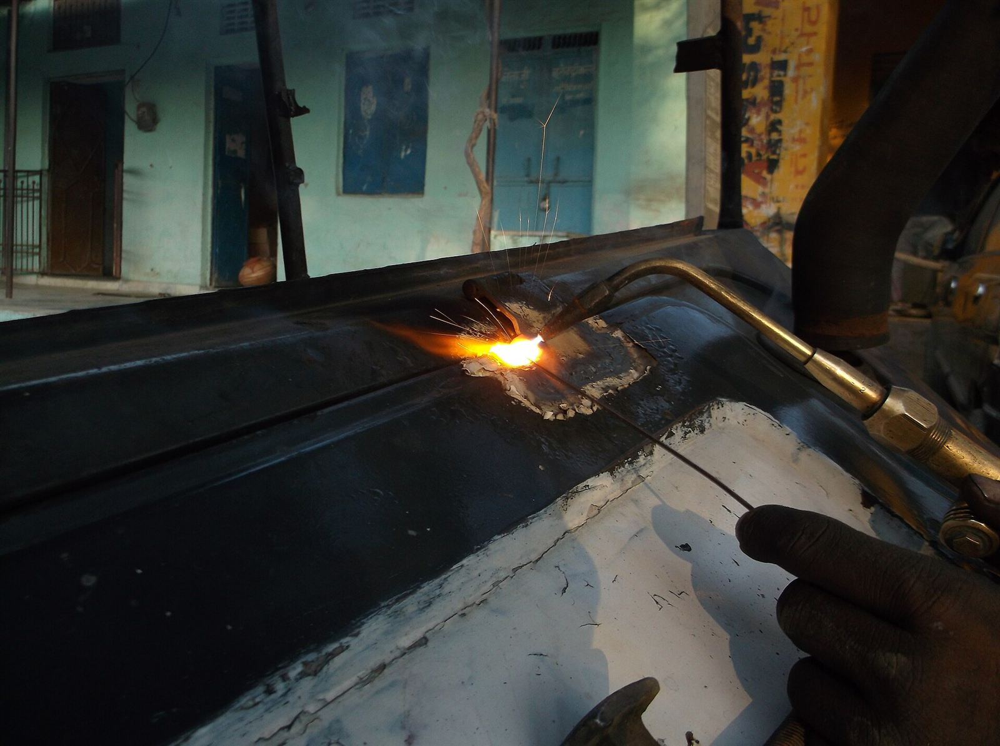

Serralheria em São José da Lapa/MG
Portões, grades e solda sob medida.
Orçamento sem custo, pelo WhatsApp ou na oficina.
- Mais de 20 anos de mercadoSerralheiro e soldador, com oficina própria.
- Orçamento sem custoO valor já inclui o material.
- Atende urgênciasFora do horário, exceto fins de semana.
- Casas, condomínios e comérciosServiço residencial e comercial.
Serviços
- Portões e gradesSob medida, com instalação.
- Automação de portãoInstalação de motor.
- Corrimãos e esquadriasPara escadas, janelas e portas.
- CoberturasEstrutura e instalação.
- Soldagem e peças sob medidaFeitas na oficina.
- Alinhamento de portãoPortão que raspa ou não fecha direito.
- Hidráulica e reparosConsertos e emergências.
- AquecedorIndicação e instalação.
Como funciona
Pedido
No WhatsApp ou na oficina. Conta o que precisa.
Orçamento
Sem custo. Você sabe o valor antes de começar.
Instalação
Fabrica na oficina, entrega e instala.
Trabalhos realizados
Quem faz
Marcelo Neves
Serralheiro e soldador em São José da Lapa. Cuida de cada serviço do começo ao fim: tira as medidas, fabrica e instala.

- Atendimento diretoVocê fala com quem faz o serviço
- Aberta ao públicoOficina no Centro de São José da Lapa
- GarantiaEm cada serviço feito
Vai até a minha casa tirar as medidas?
Sim. As medidas são tiradas no local, pessoalmente, e o orçamento não tem custo.
Quais tipos de portão são feitos?
De correr, basculante, pivotante e de abrir. Todos sob medida, feitos na oficina.
O portão já vem pintado?
Sim. O portão é entregue pintado e instalado.
Atende fora de São José da Lapa?
Atende Vespasiano e Pedro Leopoldo. Confins, Lagoa Santa e Matozinhos, conforme o serviço.
- Oficina, aberta ao público
- Rua Padre José Dias, 350 – CentroComo chegar →
- Regiões atendidas
- São José da Lapa, Vespasiano, Pedro Leopoldo e arredores
- Horário
- Segunda a sexta, das 8h às 17h.Feriados e horário negociáveis.Urgências fora do horário, exceto fins de semana.
- Pagamento
- Pix.Outras formas, combinadas com o cliente.